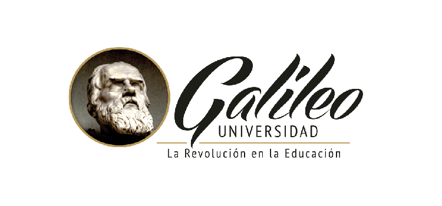

¡Conviértete en un profesional estudiando en Universidad Galileo!
profesorado en informatica
licenciatura en informatica

Este programa está dirigido a personas que hayan completado sus estudios de nivel medio. El Profesorado en Educación de la Informática y Ciencias de la Computación tiene una duración de tres años, divididos en semestres, de enero a mayo y de julio a noviembre.
Si te gusta la docencia y enseñanza y a la vez te gusta envarcarte en la tecnologia, puedes inscribiste aqui:
¡Inscribete ahora!
volver a pagina principal
